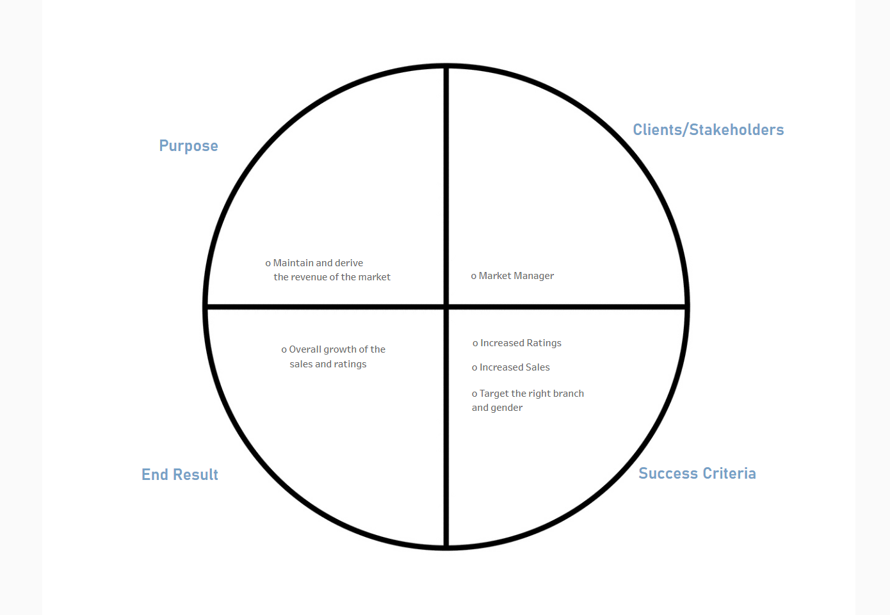

Preparation
- Downloaded Excel data from Kaggle.com
- Done ETL with SQL
- Saved modified version of data as an Excel file and used it for Tableau Visualization
Story
1. Aims Grid
2. Overall Sales and Ratings (+Interactivity)

- From the graph (top left corner), the trend line (pink dotted line) indicates that the sales amount has been constantly decreasing over the last three months.
-
Clicking on each branch, we can notice that...
- Branch C has the highest Total sales & Ratings.
- Branch B has the lowest Ratings.
- Branch A and B have the lowest Total sales
- The amount of sales was the highest at 19:00 for all of the branches.
- Rest of the time period, the amount of sales varied among the branches.
Questions
- Which Product line/Gender should we aim for each branch to increase the Sales?
- Why do A and B Branch have lower Ratings/Sales compared to C branch?
- Why does C Branch have higher Ratings/Sales compared to other branches?
3. Relationship between the Unit Price of the Products and Sales

- From the graph at the top, we can notice each branch's average price for each product line.
- From the graph at right-bottom, we can notice the number of quantities that were sold by product lines & branhces. If the product line that is placed at a high rank within this graph also has high average unit price, the profit maximizes. The more you sell expensive products, the more you get profits out of it.
-
Clicking on each branch, we can notice that...
- For branch C, Top 2 Product lines for selling the most amount of quantities matches with the Top 2 Product lines for average unit prices. The graph from left bottom also indicates that Top 2 Product lines for those branches have the most amount of profits.
-
Branch B have also matching product lines, but branch A does not. The reasons why both branches have lower total
sales than that of branch C are..
- For branch A, Top 2 Product lines for selling the most amount of quantities do not match with the Top 2 product lines for average unit prices. Also the average unit price for Health and Beauty is way much lower than that of other branches.
- For branch B, even though it has matching product lines, total quantities are the lowest among the branches and the average unit price for Electronics Accessories is way much lower than that of other branches and this product line's rank for the amount of quantities sold is 3 which is pretty high
- The amount of sales was the highest at 19:00 for all of the branches.
- Rest of the time period, the amount of sales varied among the branches.
Scores Comparions - For each Features
Gender
This distribution gives us an interesting outcome. There are more male workers who are in STEM industry than that of females and this distribution proves it. The mean score of the math test is higher for male students while for other tests, females has higher mean scores (writing and reading).
Race/Ethnicity
I wasn't able to find out which alphabet represents which race/ethnicity. But I was able to conclude that the mean score of the test was affected by the race and ethnicity. The graph was plotted in order from lowest to highest, illustrating from left to right. The order of the group for each subject was consistent.
Lunch
When I used to take SAT test, I did not eat anything because I got too nervous on every single test and that disturbed me. However, this graph tells me that I would have gotten better score if I had a meal before the test. Those graphs clearly shows that the mean score of the students who had lunch was higher than that of students who did not have lunch.
Parental Level of Education
Graph above also shows that the parental level of education also matters their students' test scores because the mean score of each subject was consistent for each parental level of education.
Test Preparation
Studying with diligent attitude with consistency is important. However, this graph shows that the test preparation course is also important. The mean score of each subject for students who have completed their test preparation was higher than that of students who have not completed their test preparation.
Correlations between the Subjects
After comparing the mean score of each features, I decided to see the relationship between the test scores for each subject.

The graphs above tells you that the person who got a good score on certain subject will get a good score on other tests. It was interesting because there are certain people who are good at certain subjects.
The heatmap supports this statement. Except for the boxes that are located on diagnoal line, all of the boxes have around 0.8 correlation among the subjects.